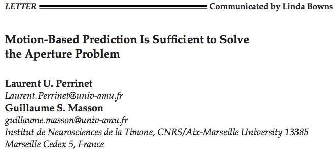

In low-level sensory systems, it is still unclear how the noisy information collected locally by neurons may give rise to a coherent global percept. This is well demonstrated for the detection of motion in the aperture problem: as luminance of an elongated line is symmetrical along its axis, tangential velocity is ambiguous when measured locally. Here, we develop the hypothesis that motion-based predictive coding is sufficient to infer global motion. Our implementation is based on a context-dependent diffusion of a probabilistic representation of motion. We observe in simulations a progressive solution to the aperture problem similar to psychophysics and behavior. We demonstrate that this solution is the result of two underlying mechanisms. First, we demonstrate the formation of a tracking behavior favoring temporally coherent features independently of their texture. Second, we observe that incoherent features are explained away while coherent information diffuses progressively to the global scale. Most previous models included ad-hoc mechanisms such as end-stopped cells or a selection layer to track specific luminance-based features. Here, we have proved that motion-based predictive coding, as it is implemented in this functional model, is sufficient to solve the aperture problem. This simpler solution may give insights in the role of prediction underlying a large class of sensory computations.

The estimation of the motion of an elongated, slanted segment (here moving horizontally to the right) on a limited area (such as the receptive field of a neuron) leads to ambiguous velocity measurements compared to physical motion: it’s the aperture problem. We represent as arrows the velocity vectors that are most likely detected by a motion energy model; hue indicates direction angle. Introducing predictive coding resolves the aperture problem.
Figure 1: (A) The estimation of the motion of an elongated, slanted segment (here moving horizontally to the right) on a limited area (such as the dotted circle) leads to ambiguous velocity measurements compared to physical motion: it’s the aperture problem. We represent as arrows the velocity vectors that are most likely detected by a motion energy model; hue indicates direction angle. Due to the limited size of receptive fields in sensory cortical areas (such as shown by the dotted white circle), such problem is faced by local populations of neurons that visually estimate the motion of objects. (A-inset) On a polar representation of possible velocity vectors (the cross in the center corresponds to the null velocity, the outer circle corresponding to twice the amplitude of physical speed), we plot the empirical histogram of detected velocity vectors. This representation gives a quantification of the aperture problem in the velocity domain: At the onset of motion detection, information is concentrated along an elongated constraint line (white=high probability, black=zero probability). (B) We use the prior knowledge that in natural scenes, motion as defined by its position and velocity is following smooth trajectories. Quantitatively, it means that velocity is approximately conserved and that position is transported according to the known velocity. We show here such a transition on position and velocity (respectively $x_t$ and $V_t$) from time t to t + dt with the perturbation modeling the smoothness of prediction in position and velocity (respectively $N_x$ and $N_V$). (C) Applying such a prior on a dynamical system detecting motion, we show that motion converges to the physical motion after approximately one spatial period (the line moved by twice its height). (C-Inset) The read-out of the system converged to the physical motion: Motion-based prediction is sufficient to resolve the aperture problem. (D) As observed at the perceptual level [Castet et al., 1993, Pei et al., 2010], size and duration of the tracking angle bias decreased with respect to the height of the line. Height was measured relative to a spatial period (respectively 60%, 40% and 20%). Here we show the average tracking angle red-out from the probabilistic representation as a function of time, averaged over 20 trials (error bars show one standard deviation).
Figure 2: Architecture of the model. The model is constituted by a classical measurement stage and of a predictive coding layer. The measurement stage consists of (A) inferring from two consecutive frames of the input flow, (B) a likelihood distribution of motion. This layer interacts with the predictive layer which consists of (C) a prediction stage that infers from the current estimate and the transition prior the upcoming state estimate and (D) an estimation stage that merges the current prediction of motion with the likelihood measured at the same instant in the previous layer (B).
Figure 3: To explore the state-space of the dynamical system, we simulated motion-based prediction for a simple small dot (size 2.5% of a spatial period) moving horizontally from the left to the right of the screen. We tested different levels of sensory noise with respect to different levels of internal noise, that is, to different values of the strength of prediction. (Right) Results show the emergence of different states for different prediction precisions: a regime when prediction is weak and which shows high tracking error and variability (No Tracking - NT), a phase for intermediate values of prediction strength (as in Figure 1) exhibiting a low tracking error and low variability in the tracking phase (True Tracking - TT) and finally a phase corresponding to higher precisions with relatively efficient mean detection but high variability (False Tracking - FT). We give 3 representative examples of the emerging states at one contrast level (C = 0.1) with starting (red) and ending (blue) points and respectively NT, TT and FT by showing inferred trajectories for each trial. (Left) We define tracking error as the ratio between detected speed and target speed and we plot it with respect to the stimulus contrast as given by the inverse of sensory noise. Error bars give the variability in tracking error as averaged over 20 trials. As prediction strength increases, there is a transition from smooth contrast response function (NT) to more binary responses (TT and FT).
Figure 4: (Top) Prediction implements a competition between different trajectories. Here, we focus on one step of the algorithm by testing different trajectories at three key positions of the segment stimulus: the two edges and the center (dashed circles). Compared to the pure sensory velocity likelihood (left insets in grayscale), prediction modulates response as shown by the velocity vectors (direction coded as hue as in Figure 1) and by the ratio of velocity probabilities (log ratio in bits, right insets). There is no change for the middle of the segment (yellow tone), but trajectories that are predicted out of the line are “explained away” (navy tone) while others may be amplified (orange tone). Notice the asymmetry between both edges, the upper edge carrying a suppressive predictive information while the bottom edge diffuses coherent motion. (Bottom) Finally, the aperture problem is solved due to the repeated application of this spatio-temporal contextual information modulation. To highlight the anisotropic diffusion of information over the rest of the line, we plot as a function of time (horizontal axis) the histogram of the detected motion marginalized over horizontal positions (vertical axis), while detected direction of velocity is given by the distribution of hues. Blueish colors correspond to the direction perpendicular to the diagonal while a green color represents a disambiguated motion to the right (as in Figure 1). The plot shows that motion is disambiguated by progressively explaining away incoherent motion. Note the asymmetry in the propagation of coherent information.